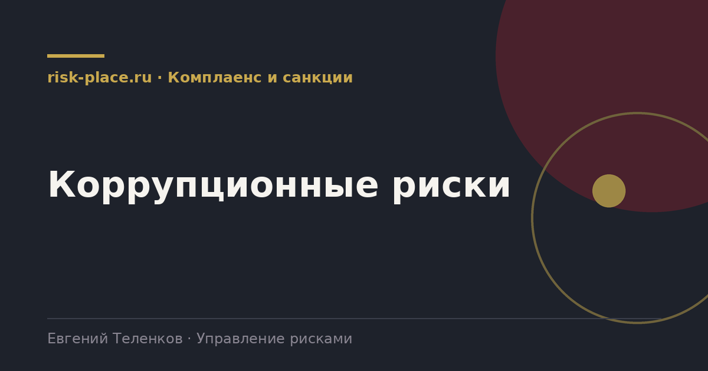

risk-
risk-Разложить процессы на операции
- По каждой зоне выписать конкретные действия, где принимается решение с денежными последствиями
Главная · Библиотека · Комплаенс и санкции · Коррупционные риски
Библиотека · Комплаенс и санкции
Документ, который превращает антикоррупционную политику из декларации в план работы.

Проверенный перечень, подходит большинству компаний.
Фрагмент по закупкам.
| Операция | Риск | Меры |
|---|---|---|
| Формирование технического задания | Требования подстроены под конкретного поставщика | Проверка ТЗ на ограничивающие требования вторым лицом, обоснование каждого специфичного требования |
| Выбор поставщика | Выбор не по критериям, предпочтение связанному лицу | Коллегиальное решение, декларирование связей членами комиссии, протоколирование обоснования |
| Приемка работ | Подписание акта за невыполненный объем | Разделение приемки и заказа, выборочная перепроверка, фотофиксация |
| Изменение условий договора | Увеличение цены после победы | Согласование любых изменений цены на уровне выше закупщика, лимит совокупных изменений |
Карта оформляется как приложение к антикоррупционной политике, утверждается приказом и доводится до руководителей затронутых подразделений. Формат таблицы, объем обычно от двадцати до пятидесяти строк.
Дальше карта работает как основание для трех вещей. Первое, программа обучения строится по зонам риска, а не одинаково для всех. Второе, план выборочных проверок идет по операциям из карты. Третье, декларирование конфликта интересов делается обязательным именно для должностей, попавших в карту, а не для всей компании поголовно, что резко повышает качество деклараций.
Частые вопросы
Одна форма для любого вопроса
Расскажем о ближайших датах, предложим формат под ваш состав участников и назовем порядок бюджета.
Предпочитаете почту — напишите на info@risk-place.ru. Адрес: Москва, улица Скаковая, 32с2.